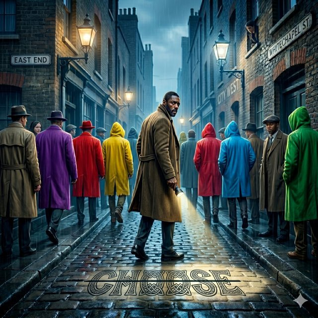
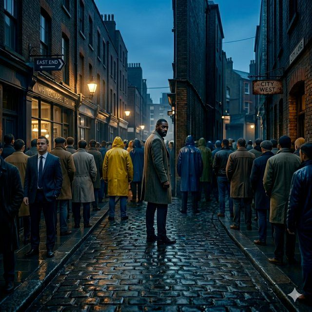
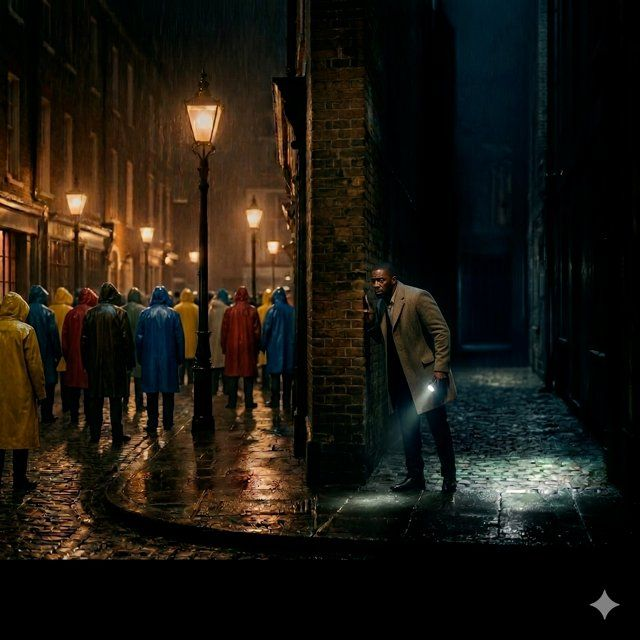
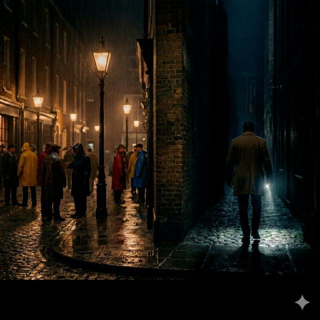
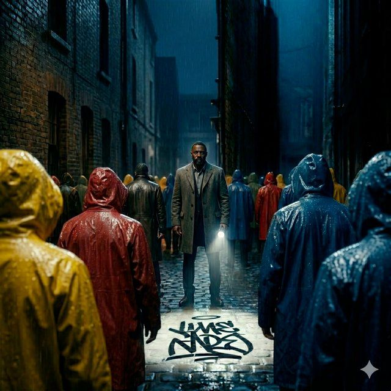
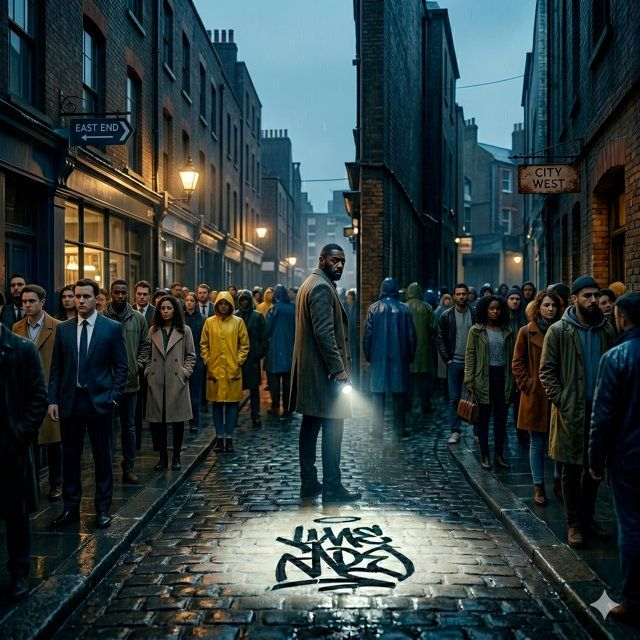
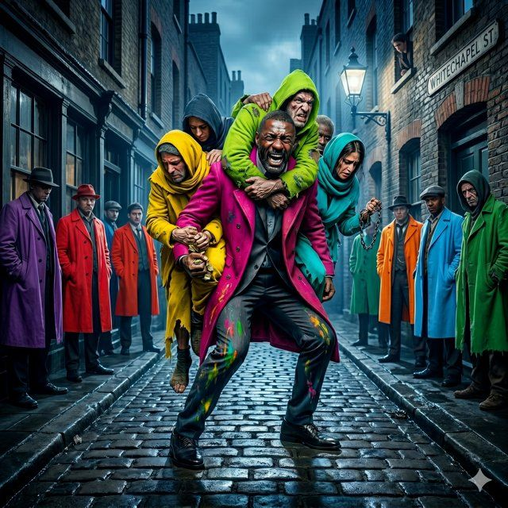

Current direction for the L2 cover. Celtic-style "CHOOSE" underfoot pulls Luther's narrative onto the pavement — the crowd walks past it, he turns back to face it. The audience stands where he stands.

Direction A asks "What do you choose when it's dark?" — this cover is the one-word reply. Luther turns back toward the graffiti while the crowd walks on. Gaslamps, Whitechapel signage, colorful raincoats at the split between East End and City West. The fork is literalized on the ground; the answer is demanded in Celtic letterform.
Each candidate illuminates a different angle of the master frame. Five are on-spec variations across the four appendix directions. One is off-spec — included as a provocation to stress-test how far the visual system can bend before it breaks.

Literal fork in the road. East End / City West signage bracket the split. Brief-compliant on demographic; Idris as pivot, crowd walking through.

Surveillance-coded. Luther behind the corner, flashlight self-illuminating. The crowd across the way is unaware. Someone had to watch. So he did.

Departure, not observation. Back turned, walking into the alley with the flashlight. The crowd stays in the light; he goes to the dark. Jon Snow at the wall.

Tag-style graffiti, close bracket. Hooded figures flanking in the immediate foreground. Luther centered, flashlight on the question. No cape. No backup.

Gender-mixed variation on the crossroads. On-brief men remain central to demographic weight; broader audience reads in the periphery. Tag graffiti under the flashlight.

Literalizes Definition 3 — "carry the darkness, so others don't have to." Emotionally charged, tonally distant from the other candidates. Not a peer option; included to mark the outer edge of where the visual system can go before it breaks.